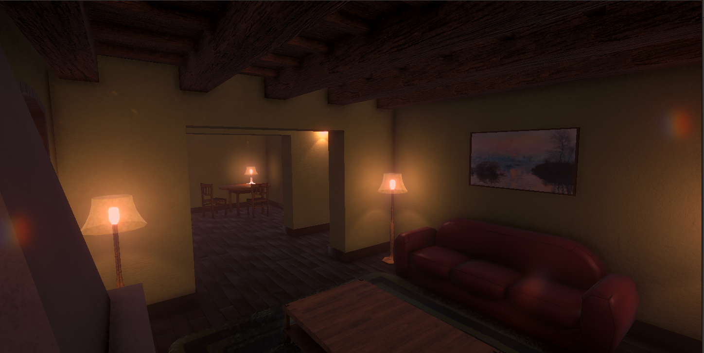
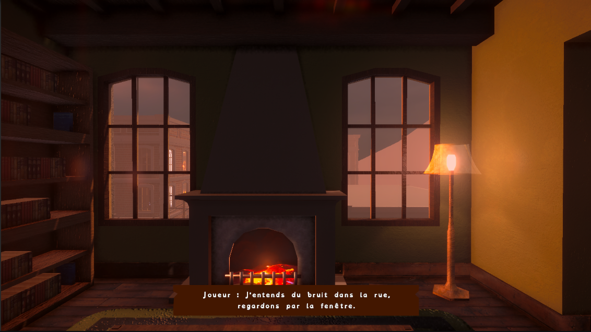

Contexte
Durant ma deuxième année de BUT Informatique graphique, mon équipe et moi avons réalisé
une adaptation du livre Matin Brun en jeu vidéo.
L'objectif était de créer un jeu d'histoire immersif qui fasse réfléchir sur les dangers des
petites lachetées quotidienne dans la mise en place d'un régime autoritaire.
Unity
Blender
GitLab
Mes contributions
- Programmation des mécaniques
- Système de dialogue
- Loading asynchrone
- Création d'outils Unity
- Optimisation avec Scriptable Objects
Difficultés rencontrées
J'ai rencontrées de nombreuses difficultés qui m'ont permis de dévelloper mes compétences en
programation et en level design.
Le plus gros challenge pour
moi sur le projet à été le système de dialogue, plus
précisément comment rendre un système complexe facilement utilisable par
les différents membres de l'équipe.
Compétences
Techniques
- Dévelopement sur Unity : Programation de mécaniques de jeu, création d'outils éditeur, architecture basé sur les scriptables objects
- Scénarisation et level Design : Création de dialogues, créations de la liaison entre les scènes
- Optimisation des performances : Utilisation de scriptable object pour optimiser la mémoire
Humaines
- Collaboration en groupe : Répartition des tâches et communication au sein d'une équipe de quatre personnes
- Gestion de projet : Planification des étapes de développement, suivi de l'avancement et respect des délais
- Adaptabilité : Ajustement des mécaniques de jeu et du scénario en fonction des retours de l'équipe
Resultat et Amélioration
Ce projet m'a permis d'apprendre à créer des sytèmes complexe en intégrant
les principes d'optimisation et les principes SOLID.
Sur ce projet j'ai reussit à créer des mécaniques de jeu
et des systèmes qui s'interconnecte afin de raconter une histoire en intégrant pleinement le joueur.
Bien que sur le plan du dévelopement j'estime que le projet est une réussite.
Aujourd'hui j'ai pu acquérir de nouvelle connaissance en particulier sur les Scriptable Object
qui me permettrait d'avoir une architecture plus robuste et d'améliorer le travail en équipe .

